Roll-a-ball is a learning project for Unity beginners. In this learning project, you’ll use Unity Editor and its built-in capabilities to set up a simple game environment and write your own custom scripts to create the game functionality.
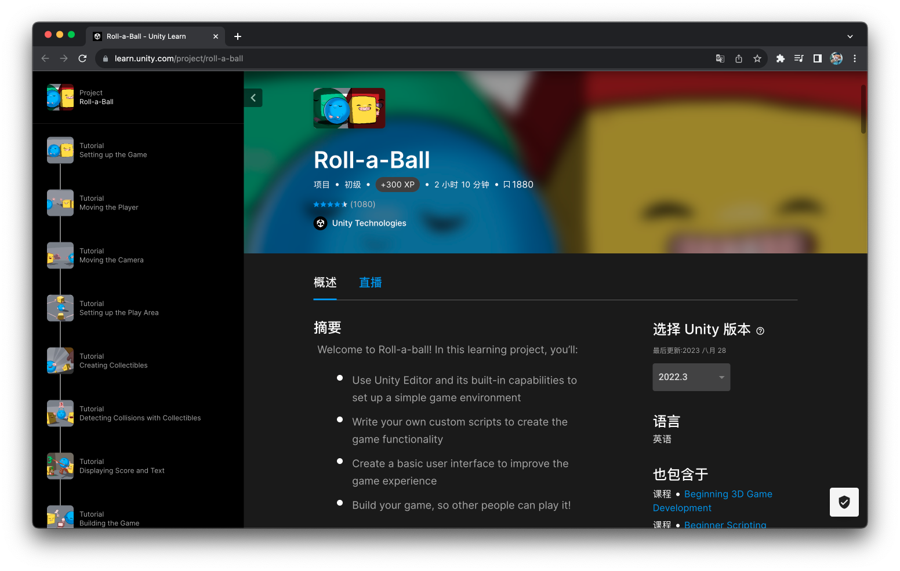
To begin with, let’s first create a new Unity project and name it as “Roll-a-ball”. 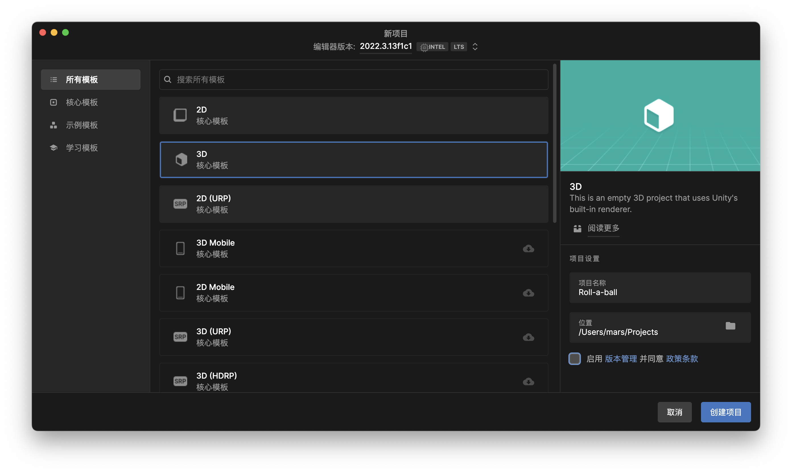 Create a new scene and name it as roll-a-ball. Add a plane object as the “Ground”. 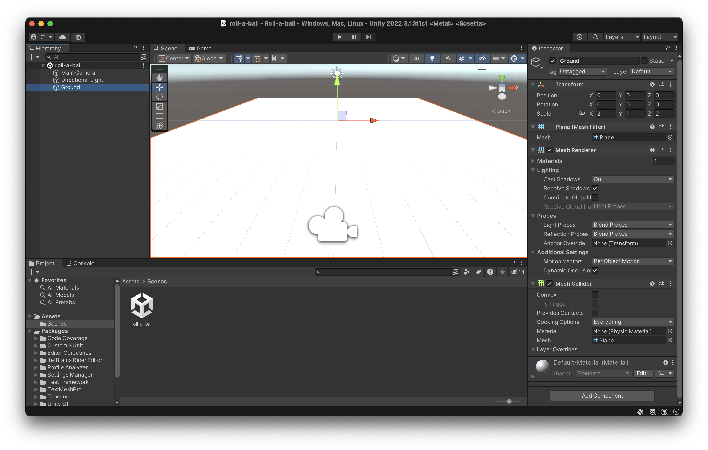 Create a material for the ground. Change material color and drag it to the “Ground” object. 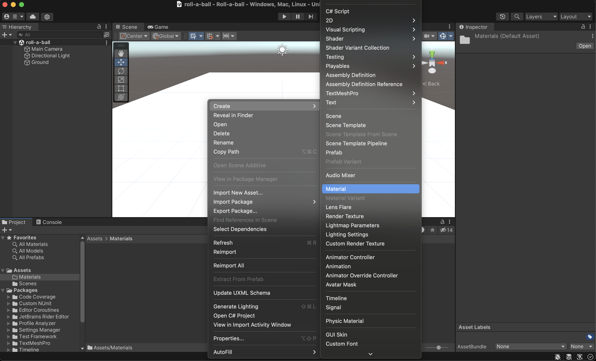 Follow the previous steps, create a sphere object as the “Player"and also add a material and Rigidbody to it. Adjust the right Transform to put the ball on the ground. 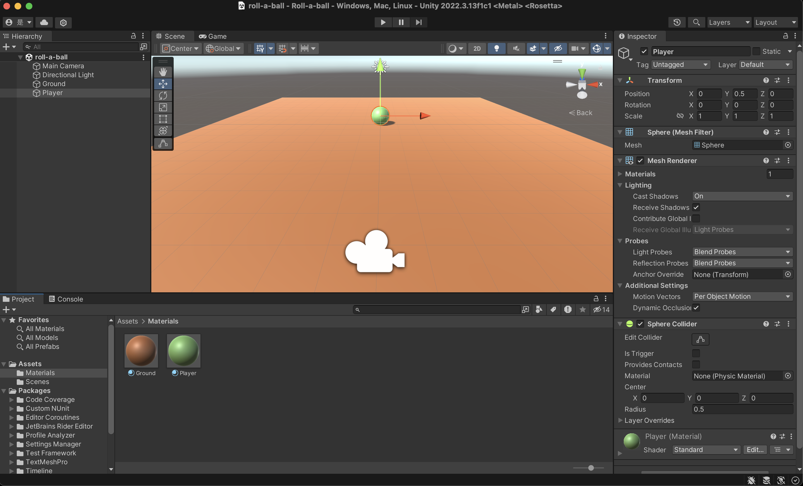
In this project, we use Unity Input System to control Player with arrow keys. First open the Package Manager and find Input System. Install it! 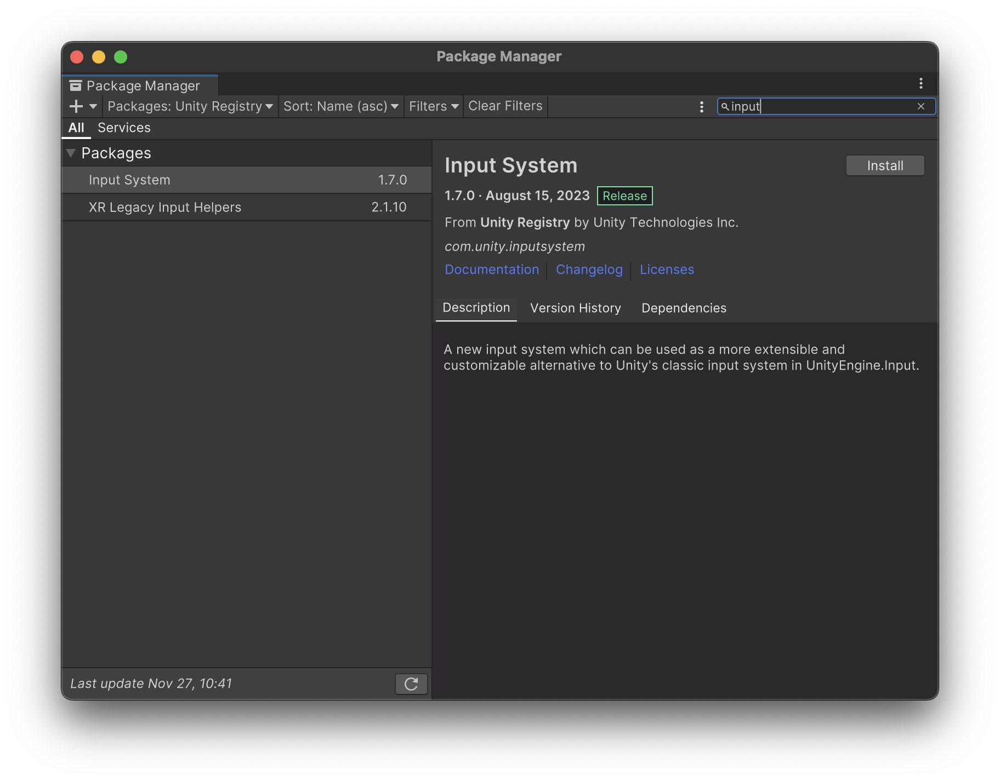 Then add Player input component to “Player” and create a new action. Create a new C# script as PlayerController.
PlayerController.cs:
using System.Collections;
using System.Collections.Generic;
using UnityEngine;
using UnityEngine.InputSystem;
public class PlayerController : MonoBehaviour
{
public float speed = 0;
private Rigidbody rb;
private float movementX;
private float movementY;
// Start is called before the first frame update
void Start()
{
rb = this.GetComponent<Rigidbody>();
}
void OnMove(InputValue movementValue)
{
Vector2 movementVector = movementValue.Get<Vector2>();
movementX = movementVector.x;
movementY = movementVector.y;
}
private void FixedUpdate()
{
Vector3 movement = new Vector3(movementX, 0.0f, movementY);
rb.AddForce(movement * speed);
}
}
We also want to let the camera follow the moving player. So let’s add a CameraController.cs to Main Camera. CameraController.cs:
using System.Collections;
using System.Collections.Generic;
using UnityEngine;
public class CameraController : MonoBehaviour
{
public GameObject player;
private Vector3 offset;
// Start is called before the first frame update
void Start()
{
offset = transform.position - player.transform.position;
}
// Update is called once per frame
void LateUpdate()
{
transform.position = player.transform.position + offset;
}
}
We want to limit the “Player” in the area of ground so let’s create 4 walls under an empty object “Walls”. 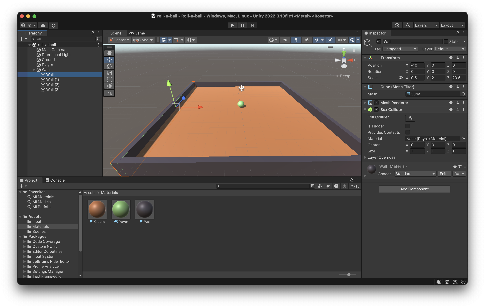 Let’s add some rotating pick-ups so that player can hit the pick-up and get score. Let’s create a pick-up tagged with pockups as prefab and duplicate it.
For Player, we add OnTruggerEnter to PlayerController.cs so that the pickups will disappear after being hitted.
private void OnTriggerEnter(Collider other)
{
if (other.gameObject.CompareTag("pickups"))
{
other.gameObject.SetActive(false);
}
}
For this pick-up, we’ll:
- add Rotator.cs
using System.Collections;
using System.Collections.Generic;
using UnityEngine;
public class Rotator : MonoBehaviour
{
// Start is called before the first frame update
void Start()
{
}
// Update is called once per frame
void Update()
{
transform.Rotate(new Vector3(15, 30, 45) * Time.deltaTime);
}
}
- In Box Collider component
- check Is Trigger
- In Rigidbody component
- uncheck Use Gravity
- check Is Kinematic
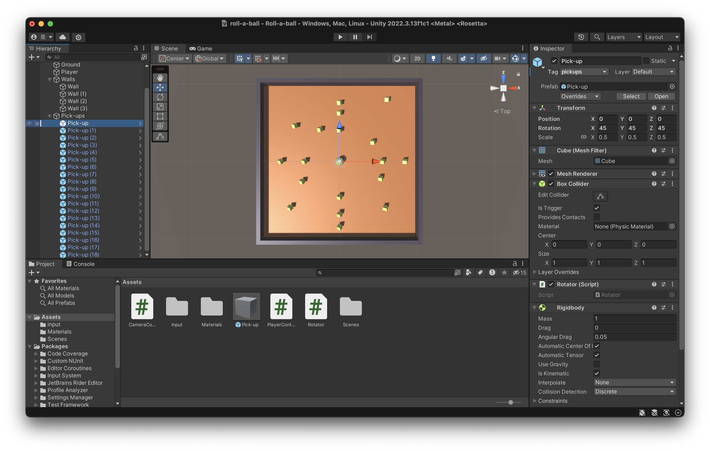 Let’s create a UI to show scores and show Win! after some hits! What we need are 2 Text - TextMeshPro. One for CountText and the other for WinText. 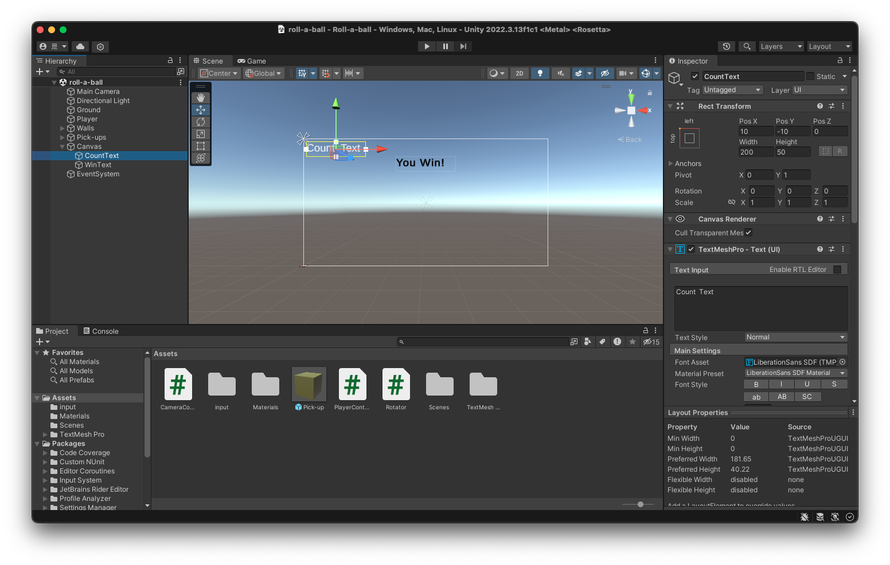 To update the CountText and display WinText after some hits,let’s add a few lines to PlayerController.cs.
using TMPro; //reference the namespace
...
public TextMeshProUGUI countText;
public GameObject winTextObject;
...
void Start()
{
...
count = 0;
SetCountText(); //set count to 0
winTextObject.SetActive(false); //hide Wintext
}
void SetCountText()
{
countText.text = "Count: " + count.ToString(); //set count
if(count >= 18)
{
winTextObject.SetActive(true); //display WinText after 18 hits
}
}
private void OnTriggerEnter(Collider other)
{
if (other.gameObject.CompareTag("pickups"))
{
other.gameObject.SetActive(false);
count += 1;
SetCountText(); // increase the count when hit and update CountText
}
}
More features
I call it Roll-a-ball:Endless. After each win, player gets the ability to jump from current ground. So that player can play this game again and again and again.
void OnJump()
{
if(count >= 18) {//player can jump only after winning
rb.AddForce(new Vector3(0, 10 * speed, 0));
}
}
void CreateNewGround()
{
//Instantiate new ground and new pick-ups
GameObject ground = Instantiate(groundPrefab, new Vector3(0, -15*level, 0), Quaternion.identity);
ground.transform.localScale = new Vector3(2*(level + 1), 1, 2* (level + 1));
for(int i = 0; i < 18; i++)
{
Vector3 randomPosition = new Vector3(Random.Range(-9f*(level+1),9f*(level+1)), 0.5f-level*15f, Random.Range(-9f* (level + 1), 9f* (level + 1)));
Instantiate(pickupPrefab, randomPosition, Quaternion.identity);
}
}
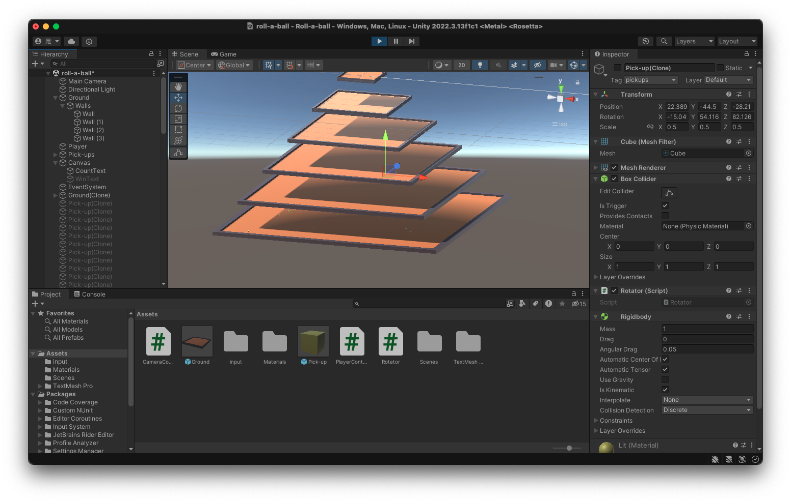 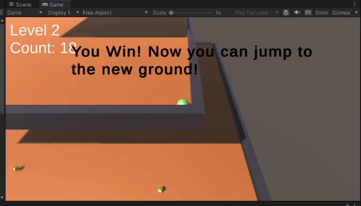